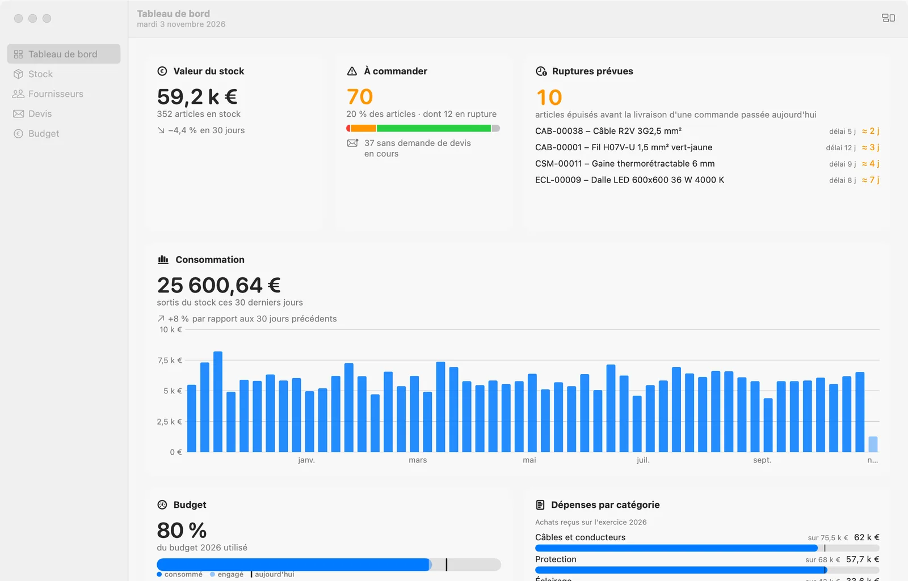
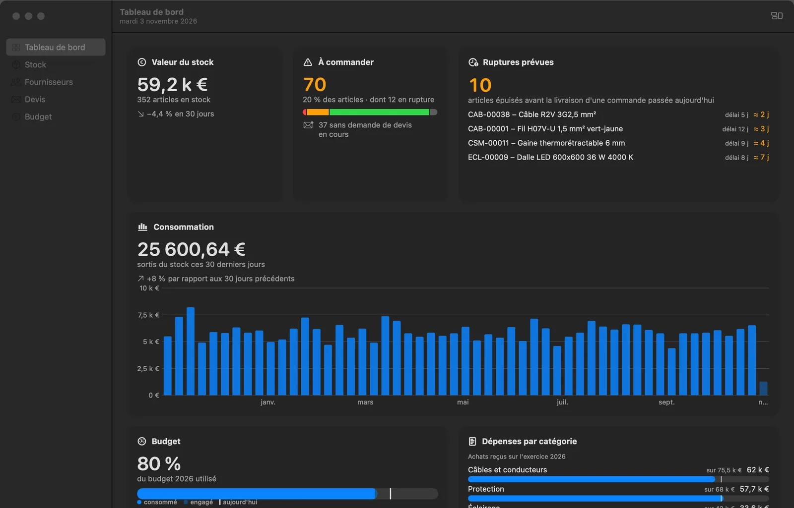
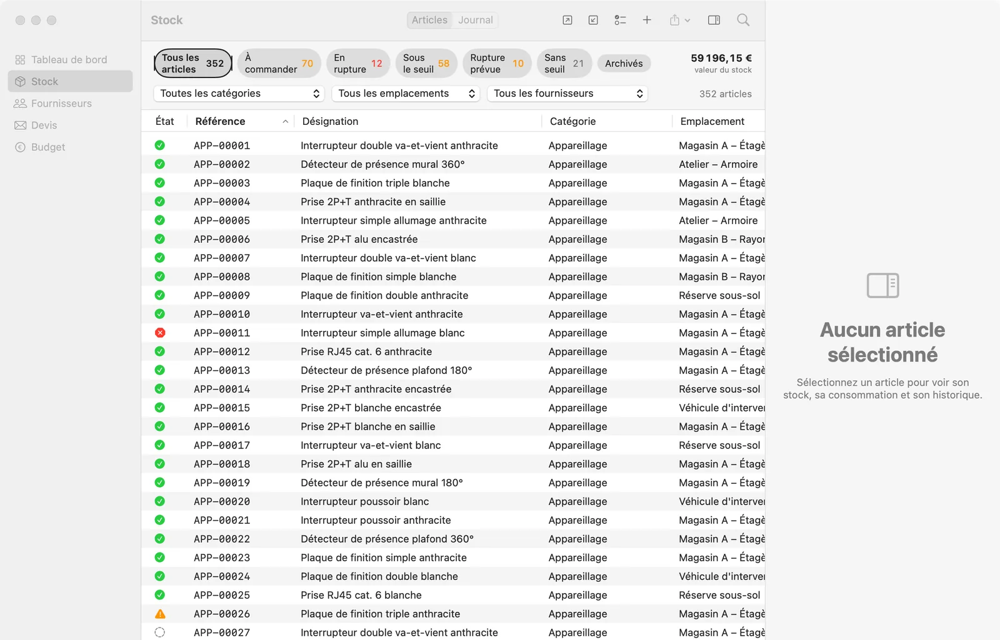
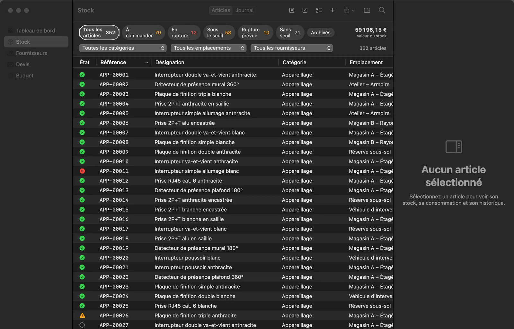
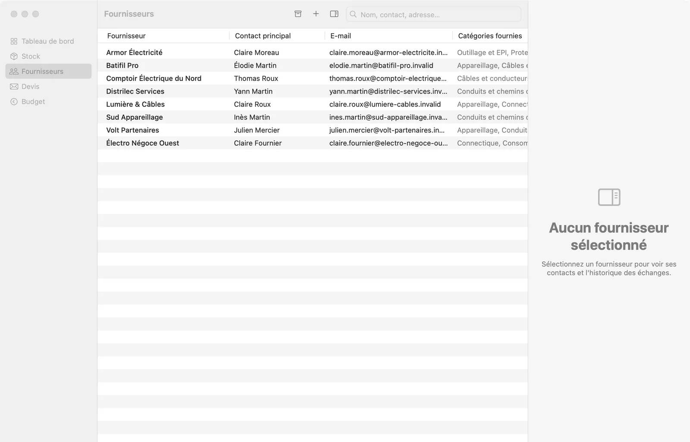
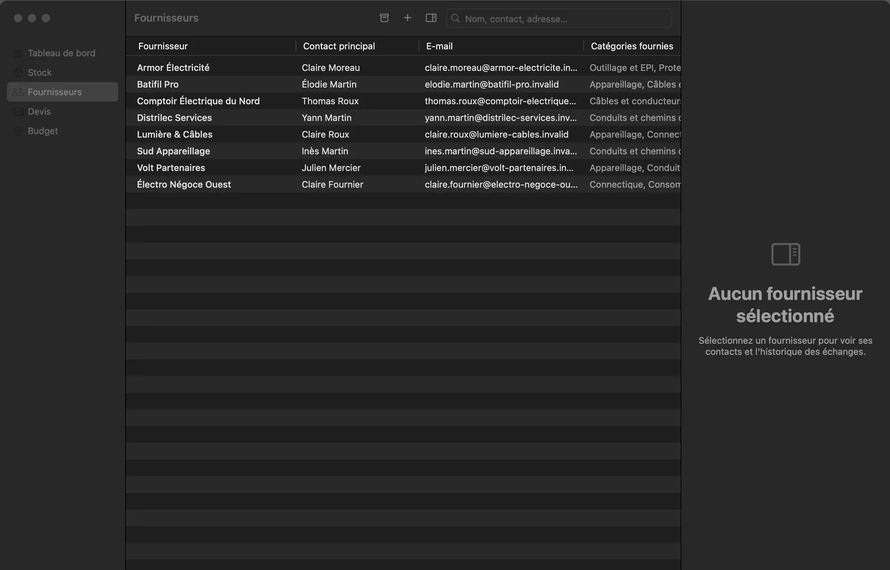
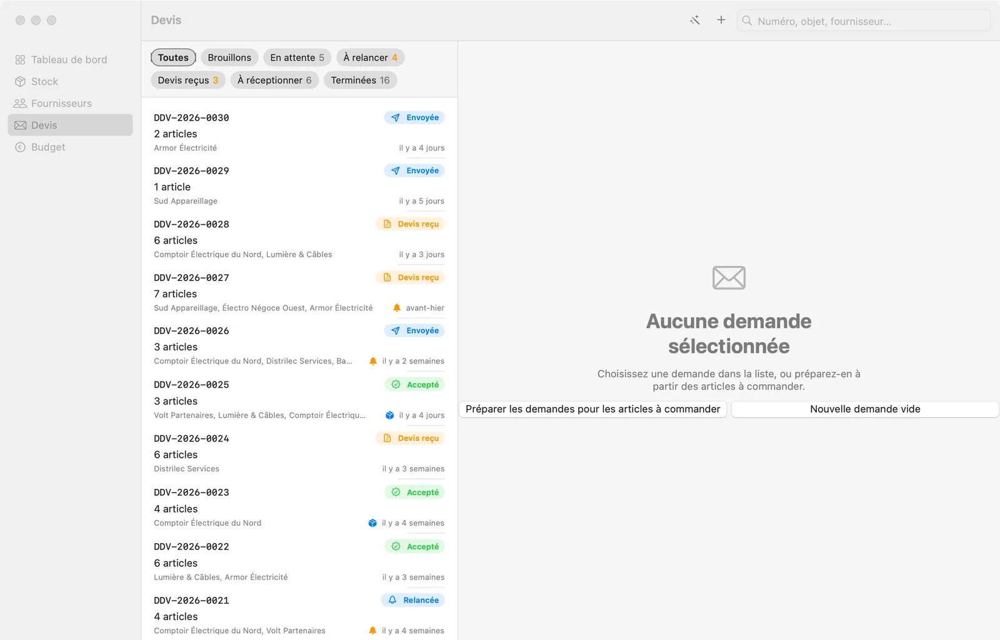
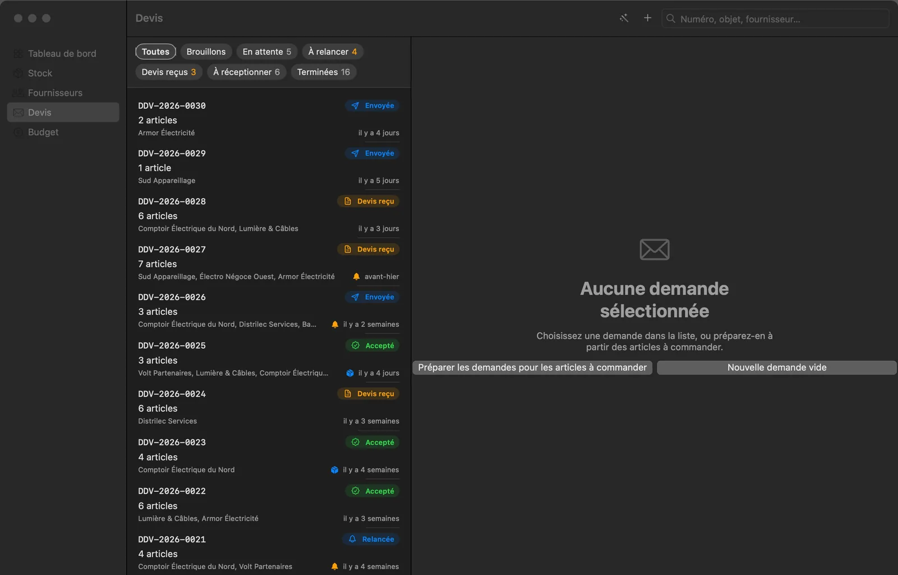
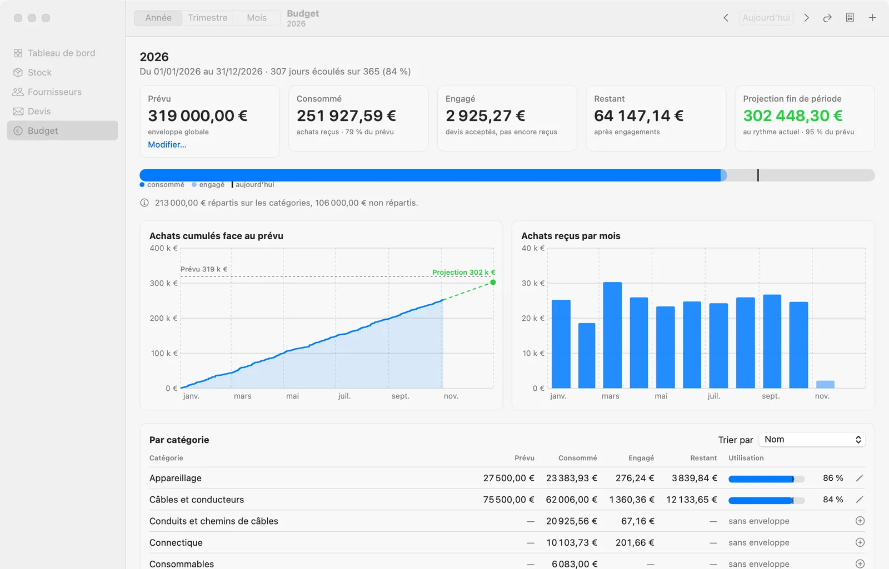
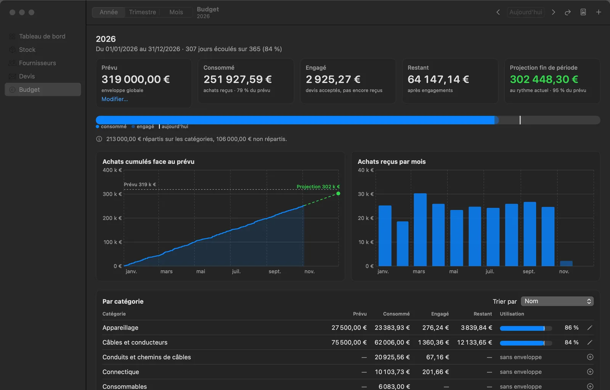

Logiciel MacService électricitéSur mesure
Le stock électrique,
au fil près.
352 références, 8 fournisseurs, un budget annuel. Volta tient le magasin du service électricité : ce qui sort, ce qui manque, ce qui est commandé et ce qu’il reste à dépenser. Sans tableur, sans serveur.










Captures de l’app sur le jeu de démonstration « Service type » (fournisseurs fictifs). Elles suivent le thème de la page.
- Articles distincts
- 352
- Mouvements sur un an
- 8 000
- Fournisseurs
- 8
- Demandes de devis
- 30
- Une sortie de stock
- 0,2ms
00Le film
Volta en trente‑six secondes.
Le tableau de bord, une sortie de stock au clavier, les ruptures prévues, les devis et le budget : les vrais écrans de l’app, en mouvement. Il démarre sans le son ; mettez-le pour la musique.
01Tableau de bord
Neuf cartes. Un clic, et la liste est déjà filtrée.
Chaque carte donne un chiffre, ce qu’il mesure et un point de comparaison. On les déplace, on les agrandit, on les masque : la disposition est retrouvée au lancement suivant.
Valeur du stock
59,2 k€
352 articles · −4,4 % en 30 jours
À commander
70
dont 12 en rupture · 37 sans demande de devis
Ruptures prévues
10
épuisés avant la livraison d’une commande passée aujourd’hui
Consommation
25 600,64 €
sortis ces 30 derniers jours · +8 %
Les plus consommés
CAB-00001
classement par valeur sur 90 jours
Devis en cours
13
en attente, reçus, brouillons, à réceptionner
Devis à relancer
4
sans réponse après le délai de relance
Budget
80 %
du budget 2026 utilisé
Dépenses par catégorie
62 k€
câbles et conducteurs, sur 75,5 k€
02Le geste le plus fréquent
Une sortie de stock en trois touches.
Sélectionner l’article, ⌘E, taper la quantité, ⏎. Le stock obtenu s’affiche pendant la frappe. Une erreur ? « Annuler » enregistre un mouvement inverse : l’erreur et sa correction restent dans l’historique.
- Sélectionner l’article
- ⌘E Sortie de stock
- Taper la quantité
- ⏎ Enregistrer
03Prévision de rupture
Il prévient avant que le carton soit vide.
Un article encore en stock peut déjà être en retard : s’il sera épuisé avant qu’une commande passée aujourd’hui n’arrive. Volta fait le calcul pour chaque référence. Essayez-le.
Rupture prévue
- Consommation moyenne
- 3,3 m/j
- Jours restants
- 12 j
- Seuil conseillé
- 70 m
conso = sorties 90 j ÷ 90 · jours restants = stock ÷ conso · seuil = conso × délai × 1,5
04Fournisseurs et devis
Du brouillon à la réception, chaque étape laisse une trace.
⇧⌘R prépare une demande par fournisseur pour tous les articles à commander. Accepter un devis écarte les autres offres et l’inscrit au budget « engagé » ; la réception fait entrer le matériel au prix du devis.
- BrouillonArticles et fournisseurs suggérés
- EnvoyéePar Apple Mail, modèle à variables
- RelancéeAprès le délai de relance
- Devis reçuPrix par ligne, délai, PDF joint
- AcceptéComparatif, meilleur prix par ligne
- RéceptionnéEntrée en stock, budget consommé
05Budget
Ce qui est prévu, engagé, consommé. Et où l’on finira.
La projection prolonge le rythme actuel jusqu’à la fin de l’exercice. Elle passe à l’orange au-delà de 100 % du prévu, au rouge au-delà de 110 %. Exercice 2026 de la démonstration :
- Prévu
- 319 000,00 €
- Consommé
- 251 927,59 €
- Engagé
- 2 925,27 €
- Restant
- 64 147,14 €
Projection fin d’exercice 302 448,30 € 95 % du prévu
06Fondations
Un logiciel de magasin doit être juste au centime. Et rapide à 500 000 lignes.
Mesures faites avec le banc de l’app sur 50 000 articles et 500 000 mouvements (Apple M5) : une base dix fois plus grosse que celle du service.
Des centimes exacts
Quantités et montants sont des nombres décimaux, jamais des flottants. En base, ils sont stockés en entiers mis à l’échelle : les sommes calculées par SQLite tombent juste.
Tout passe par un mouvement
Entrée, sortie, ajustement, inventaire : la quantité change dans la même transaction, tout ou rien. Un contrôle recalcule chaque stock depuis l’historique.
Rien n’est supprimé
Articles et fournisseurs sont archivés, leur historique reste lisible. Une sauvegarde chaque jour, trente conservées, et une archive complète restaurable en deux confirmations.
SQLite plutôt que SwiftData
Pour faire calculer les totaux par la base, chercher en plein texte et versionner le schéma. L’interface ne connaît que des protocoles : le moteur peut changer sans toucher aux écrans.
07Questions
Avant de ranger le tableur.
À qui s’adresse Volta ?
À un service électricité qui gère son propre magasin de matériel : câbles, appareillage, éclairage, protections. Volta a été conçu sur mesure pour ce métier, avec ses références, ses emplacements et ses fournisseurs.
Les données partent-elles sur Internet ?
Non. Volta fonctionne uniquement en local, sur le Mac, sans compte ni iCloud. Les seuls envois sont les demandes de devis, que vous choisissez d’envoyer par votre messagerie.
Peut-on reprendre un fichier Excel existant ?
Oui. L’import CSV reconnaît les fichiers d’Excel, de LibreOffice ou d’un logiciel métier, détecte le séparateur et l’encodage, contrôle chaque ligne avant d’écrire et liste les erreurs avec leur numéro de ligne.
Que se passe-t-il en cas de fausse manipulation ?
Rien n’est perdu. Chaque mouvement peut être annulé par un mouvement inverse, rien n’est supprimé (les articles sont archivés), une sauvegarde est faite chaque jour et avant toute opération sensible, et une sauvegarde complète se restaure en deux confirmations.
MTX Studio peut-il créer un logiciel de ce type pour mon activité ?
Oui. Volta montre ce qu’un outil sur mesure apporte face à un tableur : des règles métier exactes, des écrans pensés pour les gestes du quotidien et des données fiables. Décrivez votre besoin à mtxstudio@proton.me.